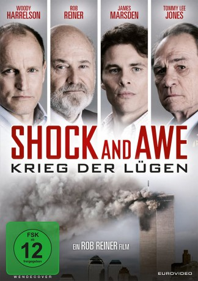

#9751 Shock and Awe - Krieg der Lügen
Alternativ: Shock and Awe
 
 IMDB-Wertung: 5.7 / 10
IMDB-Wertung: 5.7 / 10  Metascore: 45
Metascore: 45 
Eine Gruppe von Journalisten, die 2003 über George Bushs geplanten Einmarsch in den Irak berichten, stehen der Aussage des Präsidenten, Saddam Hussein sei im Besitz von Massenvernichtungswaffen, skeptisch gegenüber.
Jahr: 2017
Dauer: 91 Minuten
FSK: 12
Land: USA Studio: Vertical EntertainmentTonspuren: DTS - ,
Untertitel: Deutsch,
Auflösung: 1080p (1920x1040) Größe: 5273 MB
Genre: Thriller, Drama, Geschichte, Biographie
Regisseur:  Rob Reiner
Rob Reiner
Drehbuch: Joey Hartstone
Soundtrack: Jeff Beal
Darsteller:
Datei: X:\2017(N-Z)\Shock and Awe - Krieg der Lügen (2017, FSK12, 1920x1040).mkv seit 26.10.2018
Festplatte: HD 2017(A-Z)-2018(A-F)
 Es gibt insgesamt 170 Filme in der Gruppe '2017(N-Z)'
Es gibt insgesamt 170 Filme in der Gruppe '2017(N-Z)'